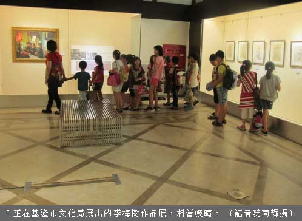

文化中心 李梅樹作品展
阮南輝｜中華日報／基隆版｜2015年8月18日
a正在基隆市文化中心第一陳列室舉辦的「時光．映像─李梅樹」作品展，展出近百件作品，相當吸晴，展期到九月十二日，歡迎民眾趁著暑假陪孩子走一趟文化中心，欣賞己故大師的創作。
李樹梅在少時即展現出過人的繪畫天份，立定成為一名畫家的志向，經過一番波折，他在廿七歲之齡毅然赴日留學習畫，他的個性嚴謹務實，無論留日期間野獸派風潮的盛行，或是其後抽象畫風的風行，始終堅持追求寫實的風格，並擺脫西方美學觀的囿限，回歸對家鄉人事物的真實描寫，畫出真正屬於這塊土地的風情。
李梅樹以其畫筆，深刻地紀錄了家鄉三峽的風貌，同時也是當時的縮影。這次展出以「時光．映像」為主題，由基隆市文化局主辦，李梅樹紀念館、財團法人基隆文化基金會、台灣港務股份有限公司基隆港務分公司、財團法人基隆市一信文教基金會等單位協辦。並向三峽李梅樹紀念館借展十五幅油畫、六幅素描、畫中文物六件及十九幅輸出小圖。